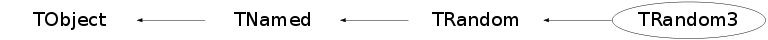

class TRandom3: public TRandom
TRandom3 Random number generator class based on M. Matsumoto and T. Nishimura, Mersenne Twistor: A 623-diminsionally equidistributed uniform pseudorandom number generator ACM Transactions on Modeling and Computer Simulation, Vol. 8, No. 1, January 1998, pp 3--30. For more information see the Mersenne Twistor homepage http://www.math.keio.ac.jp/~matumoto/emt.html Advantage: large period 2**19937-1 relativly fast (only two times slower than TRandom, but two times faster than TRandom2) Drawback: a relative large internal state of 624 integers Aug.99 ROOT implementation based on CLHEP by P.Malzacher the original code contains the following copyright notice: This library is free software; you can redistribute it and/or modify it under the terms of the GNU Library General Public License as published by the Free Software Foundation; either version 2 of the License, or (at your option) any later version. This library is distributed in the hope that it will be useful, but WITHOUT ANY WARRANTY; without even the implied warranty of MERCHANTABILITY or FITNESS FOR A PARTICULAR PURPOSE. See the GNU Library General Public License for more details. You should have received a copy of the GNU Library General Public License along with this library; if not, write to the Free Foundation, Inc., 59 Temple Place, Suite 330, Boston, MA 02111-1307 USA Copyright (C) 1997 Makoto Matsumoto and Takuji Nishimura. When you use this, send an email to: matumoto@math.keio.ac.jp with an appropriate reference to your work.
Function Members (Methods)
public:
| TRandom3(UInt_t seed = 4357) | |
| TRandom3(const TRandom3&) | |
| virtual | ~TRandom3() |
| void | TObject::AbstractMethod(const char* method) const |
| virtual void | TObject::AppendPad(Option_t* option = "") |
| virtual Int_t | TRandom::Binomial(Int_t ntot, Double_t prob) |
| virtual Double_t | TRandom::BreitWigner(Double_t mean = 0, Double_t gamma = 1) |
| virtual void | TObject::Browse(TBrowser* b) |
| virtual void | TRandom::Circle(Double_t& x, Double_t& y, Double_t r) |
| static TClass* | Class() |
| virtual const char* | TObject::ClassName() const |
| virtual void | TNamed::Clear(Option_t* option = "") |
| virtual TObject* | TNamed::Clone(const char* newname = "") const |
| virtual Int_t | TNamed::Compare(const TObject* obj) const |
| virtual void | TNamed::Copy(TObject& named) const |
| virtual void | TObject::Delete(Option_t* option = "")MENU |
| virtual Int_t | TObject::DistancetoPrimitive(Int_t px, Int_t py) |
| virtual void | TObject::Draw(Option_t* option = "") |
| virtual void | TObject::DrawClass() constMENU |
| virtual TObject* | TObject::DrawClone(Option_t* option = "") constMENU |
| virtual void | TObject::Dump() constMENU |
| virtual void | TObject::Error(const char* method, const char* msgfmt) const |
| virtual void | TObject::Execute(const char* method, const char* params, Int_t* error = 0) |
| virtual void | TObject::Execute(TMethod* method, TObjArray* params, Int_t* error = 0) |
| virtual void | TObject::ExecuteEvent(Int_t event, Int_t px, Int_t py) |
| virtual Double_t | TRandom::Exp(Double_t tau) |
| virtual void | TObject::Fatal(const char* method, const char* msgfmt) const |
| virtual void | TNamed::FillBuffer(char*& buffer) |
| virtual TObject* | TObject::FindObject(const char* name) const |
| virtual TObject* | TObject::FindObject(const TObject* obj) const |
| virtual Double_t | TRandom::Gaus(Double_t mean = 0, Double_t sigma = 1) |
| virtual Option_t* | TObject::GetDrawOption() const |
| static Long_t | TObject::GetDtorOnly() |
| virtual const char* | TObject::GetIconName() const |
| virtual const char* | TNamed::GetName() const |
| virtual char* | TObject::GetObjectInfo(Int_t px, Int_t py) const |
| static Bool_t | TObject::GetObjectStat() |
| virtual Option_t* | TObject::GetOption() const |
| virtual UInt_t | GetSeed() const |
| virtual const char* | TNamed::GetTitle() const |
| virtual UInt_t | TObject::GetUniqueID() const |
| virtual Bool_t | TObject::HandleTimer(TTimer* timer) |
| virtual ULong_t | TNamed::Hash() const |
| virtual void | TObject::Info(const char* method, const char* msgfmt) const |
| virtual Bool_t | TObject::InheritsFrom(const char* classname) const |
| virtual Bool_t | TObject::InheritsFrom(const TClass* cl) const |
| virtual void | TObject::Inspect() constMENU |
| virtual UInt_t | TRandom::Integer(UInt_t imax) |
| void | TObject::InvertBit(UInt_t f) |
| virtual TClass* | IsA() const |
| virtual Bool_t | TObject::IsEqual(const TObject* obj) const |
| virtual Bool_t | TObject::IsFolder() const |
| Bool_t | TObject::IsOnHeap() const |
| virtual Bool_t | TNamed::IsSortable() const |
| Bool_t | TObject::IsZombie() const |
| virtual Double_t | TRandom::Landau(Double_t mean = 0, Double_t sigma = 1) |
| virtual void | TNamed::ls(Option_t* option = "") const |
| void | TObject::MayNotUse(const char* method) const |
| virtual Bool_t | TObject::Notify() |
| void | TObject::Obsolete(const char* method, const char* asOfVers, const char* removedFromVers) const |
| static void | TObject::operator delete(void* ptr) |
| static void | TObject::operator delete(void* ptr, void* vp) |
| static void | TObject::operator delete[](void* ptr) |
| static void | TObject::operator delete[](void* ptr, void* vp) |
| void* | TObject::operator new(size_t sz) |
| void* | TObject::operator new(size_t sz, void* vp) |
| void* | TObject::operator new[](size_t sz) |
| void* | TObject::operator new[](size_t sz, void* vp) |
| TRandom3& | operator=(const TRandom3&) |
| virtual void | TObject::Paint(Option_t* option = "") |
| virtual Int_t | TRandom::Poisson(Double_t mean) |
| virtual Double_t | TRandom::PoissonD(Double_t mean) |
| virtual void | TObject::Pop() |
| virtual void | TNamed::Print(Option_t* option = "") const |
| virtual void | TRandom::Rannor(Float_t& a, Float_t& b) |
| virtual void | TRandom::Rannor(Double_t& a, Double_t& b) |
| virtual Int_t | TObject::Read(const char* name) |
| virtual void | TRandom::ReadRandom(const char* filename) |
| virtual void | TObject::RecursiveRemove(TObject* obj) |
| void | TObject::ResetBit(UInt_t f) |
| virtual Double_t | Rndm(Int_t i = 0) |
| virtual void | RndmArray(Int_t n, Float_t* array) |
| virtual void | RndmArray(Int_t n, Double_t* array) |
| virtual void | TObject::SaveAs(const char* filename = "", Option_t* option = "") constMENU |
| virtual void | TObject::SavePrimitive(ostream& out, Option_t* option = "") |
| void | TObject::SetBit(UInt_t f) |
| void | TObject::SetBit(UInt_t f, Bool_t set) |
| virtual void | TObject::SetDrawOption(Option_t* option = "")MENU |
| static void | TObject::SetDtorOnly(void* obj) |
| virtual void | TNamed::SetName(const char* name)MENU |
| virtual void | TNamed::SetNameTitle(const char* name, const char* title) |
| static void | TObject::SetObjectStat(Bool_t stat) |
| virtual void | SetSeed(UInt_t seed = 0) |
| virtual void | TNamed::SetTitle(const char* title = "")MENU |
| virtual void | TObject::SetUniqueID(UInt_t uid) |
| virtual void | ShowMembers(TMemberInspector& insp) |
| virtual Int_t | TNamed::Sizeof() const |
| virtual void | TRandom::Sphere(Double_t& x, Double_t& y, Double_t& z, Double_t r) |
| virtual void | Streamer(TBuffer& b) |
| void | StreamerNVirtual(TBuffer& b) |
| virtual void | TObject::SysError(const char* method, const char* msgfmt) const |
| Bool_t | TObject::TestBit(UInt_t f) const |
| Int_t | TObject::TestBits(UInt_t f) const |
| virtual Double_t | TRandom::Uniform(Double_t x1 = 1) |
| virtual Double_t | TRandom::Uniform(Double_t x1, Double_t x2) |
| virtual void | TObject::UseCurrentStyle() |
| virtual void | TObject::Warning(const char* method, const char* msgfmt) const |
| virtual Int_t | TObject::Write(const char* name = 0, Int_t option = 0, Int_t bufsize = 0) |
| virtual Int_t | TObject::Write(const char* name = 0, Int_t option = 0, Int_t bufsize = 0) const |
| virtual void | TRandom::WriteRandom(const char* filename) |
protected:
| virtual void | TObject::DoError(int level, const char* location, const char* fmt, va_list va) const |
| void | TObject::MakeZombie() |
Data Members
public:
| enum TObject::EStatusBits { | kCanDelete | |
| kMustCleanup | ||
| kObjInCanvas | ||
| kIsReferenced | ||
| kHasUUID | ||
| kCannotPick | ||
| kNoContextMenu | ||
| kInvalidObject | ||
| }; | ||
| enum TObject::[unnamed] { | kIsOnHeap | |
| kNotDeleted | ||
| kZombie | ||
| kBitMask | ||
| kSingleKey | ||
| kOverwrite | ||
| kWriteDelete | ||
| }; |
protected:
| TString | TNamed::fName | object identifier |
| UInt_t | TRandom::fSeed | Random number generator seed |
| TString | TNamed::fTitle | object title |
Class Charts
{kind=link}
{kind=link}
{kind=link}
{kind=link}

Function documentation
TRandom3(UInt_t seed = 4357)
default constructor*-*-*-*- If seed is 0, the seed is automatically computed via a TUUID object. In this case the seed is guaranteed to be unique in space and time.
Double_t Rndm(Int_t i = 0)
Machine independent random number generator. Produces uniformly-distributed floating points in ]0,1] Method: Mersenne Twistor
void RndmArray(Int_t n, Float_t* array)
Return an array of n random numbers uniformly distributed in ]0,1]
void RndmArray(Int_t n, Double_t* array)
Return an array of n random numbers uniformly distributed in ]0,1]
void SetSeed(UInt_t seed = 0)
Set the random generator sequence if seed is 0 (default value) a TUUID is generated and used to fill the first 8 integers of the seed array. In this case the seed is guaranteed to be unique in space and time. Use upgraded seeding procedure to fix a known problem when seeding with values with many zero in the bit pattern (like 2**28). see http://www.math.sci.hiroshima-u.ac.jp/~m-mat/MT/MT2002/emt19937ar.html
UInt_t GetSeed() const
get the current seed (only first element of the seed table)
{ return fMt[0];}